Human Computer Interaction Project
Part 1: Developing Project Idea
Lack of access to grocery stores.
- User group: Upperclassmen who live off-campus, don't have a car, want to save money, and don’t like to eat out
all the time.
- Problem Space: Meals and nourishment is a sizable living expense we all face. Without easy access to the
grocery
store, this cost goes up immensely with the only option to be dining out. Thus, the problem facing this user
group
is the lack of access to affordable groceries. Without a car, the time cost is a crucial concern for our user
group when doing groceries. Public transportation usually costs two to three times more time and considerable
physical work to carry heavy bags. The current online solution to this problem can be very pricey.
- Enthusiasm: We are excited about helping this group because accessibility to affordable groceries for healthy
living is an important issue, especially among younger people. This project will give members of the user group
access to more affordable groceries. Thus, one impact of this project is saving money and alleviating one source
of financial strain for those within our user group. Additionally, a second potential impact of the project’s
results is to increase the variety of meal options available to the individuals in this user group and thus
improving their general nutrition, and ultimately their health.
- Impact: This project will give members of the user group access to more affordable groceries. Thus, one impact
of this
project is saving money and alleviating one source of financial strain. Additionally, a second impact is to
increase the variety of meal options available to the individuals in this user group and thus increasing their
health and nutrition.
Part 2: Conduct User Interviews: Better Understand Problem Space
User Interviews:
The first step in the process of running the user interviews was to create an interview protocol to follow in all of
the user interviews. Below is some information and takeaways from one of the completed user interviews.
Participant:
Sarah is a senior at Cornell studying Human Development in the College of Human Ecology. This semester she is
enrolled in 13 credits. She lives in a house in Collegetown with 6 other roommates. In the house, there is one kitchen
with one stove, one oven, one dishwasher and two refrigerators. She doesn’t have a car in Ithaca, or means of
transportation of her own. Additionally, she cooks many meals for herself per week.
Context of the Interview
The interview occurred in the kitchen of the participant’s home. It was conducted at 6PM on Wednesday October 6th.
The interview lasted around 30 minutes. The interview was conducted in the kitchen of the participant’s home. The
kitchen is attached to the living room of the home in a relatively open floor plan. Whilst conducting the interview,
there was a lot of hustle and bustle around the kitchen and living room. The participant has six other roommates, 5 of
whom were in the area at the time of the interview. During the course of the interview, there were two people in the
kitchen cooking their dinner. This involved cutting veggies, using the oven and sauteing things on the stove.
Session Summary Takeaways
- One really interesting and important thing that I learned from this interview and from this participant is that
one aspect of the grocery shopping process that she really enjoys and values is actually physically being in the
grocery store. This is slightly counter to what I would have imagined to be the case.
- Sarah is really motivated by socializing and social interactions. This fuels both her fun at the grocery store and
while eating and cooking dinner.
- Going to the grocery store on a set schedule really helps Sarah be able to get to the store consistently, even
without her own means of transportation.
Affinity Diagram
Following the user interviews, we used Figma to create an affinity diagram to find commonalities and patterns between
the different user interviews conducted. Below is the affinity diagram.


 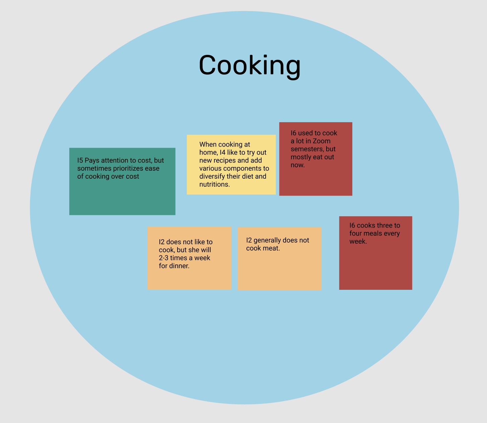
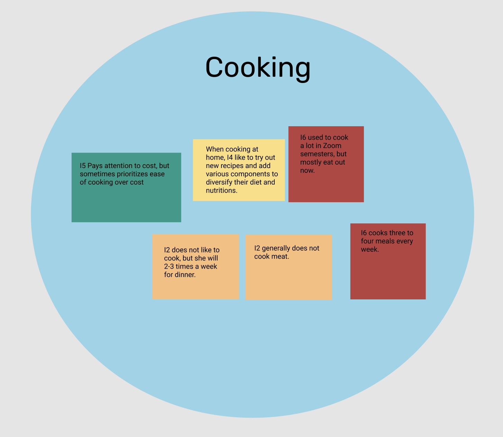


 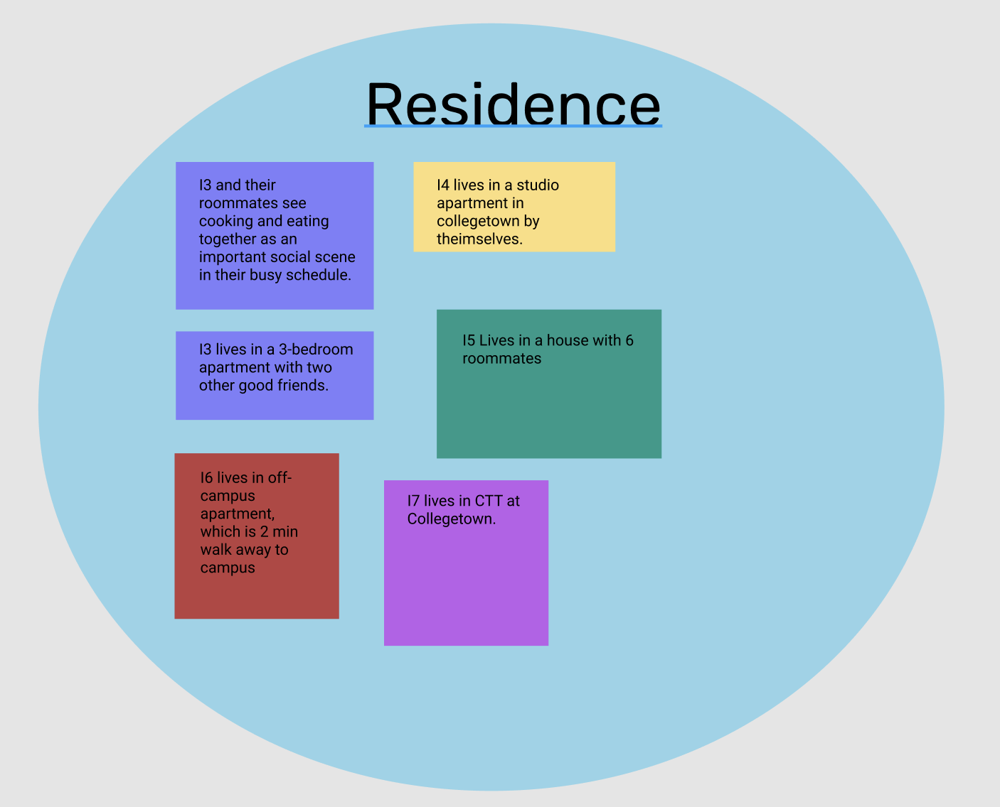
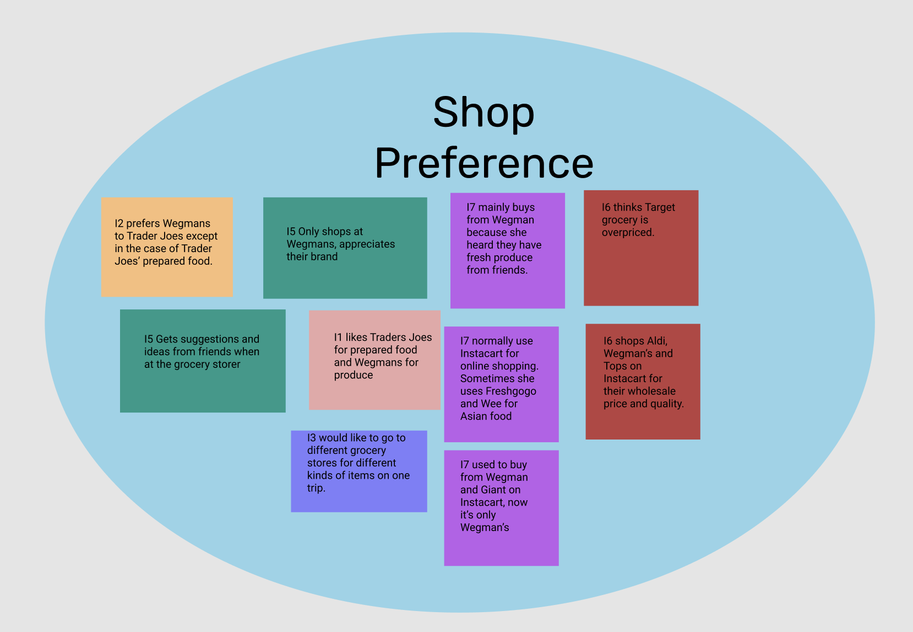
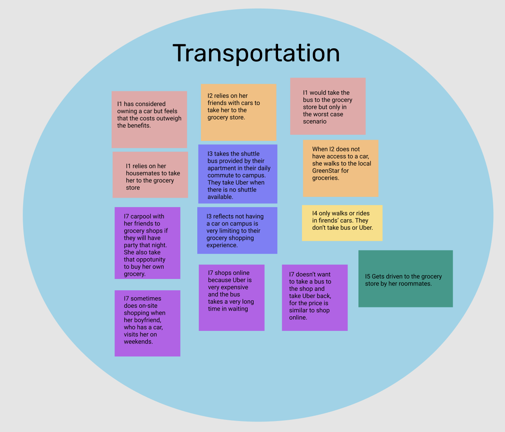
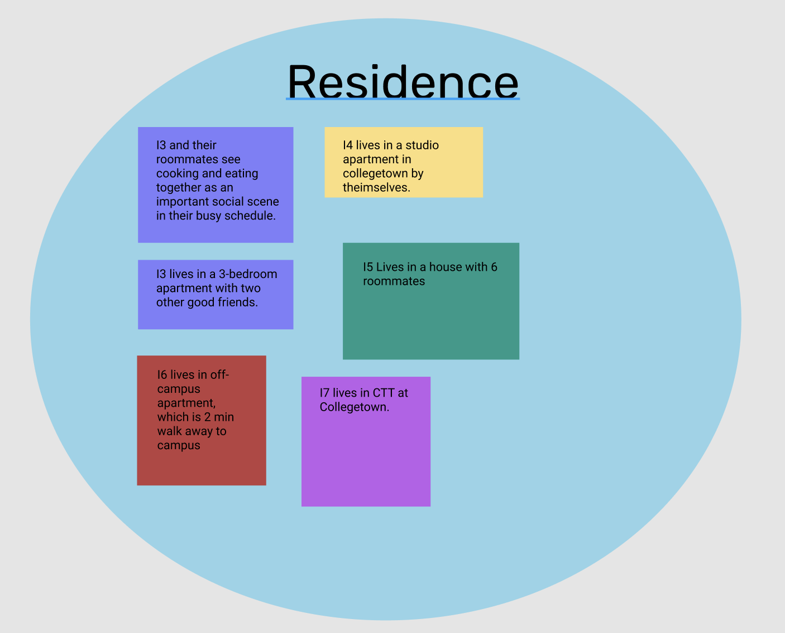
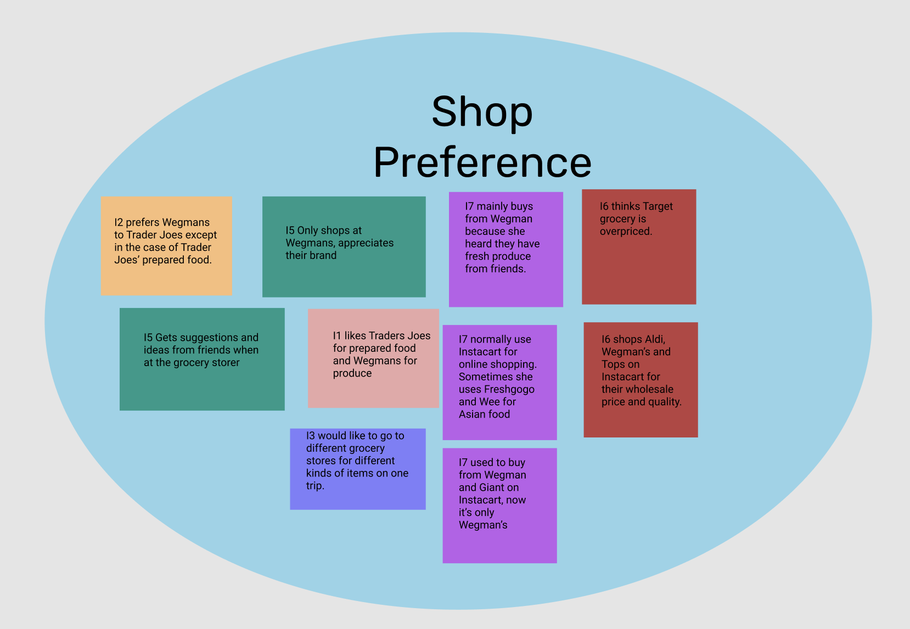
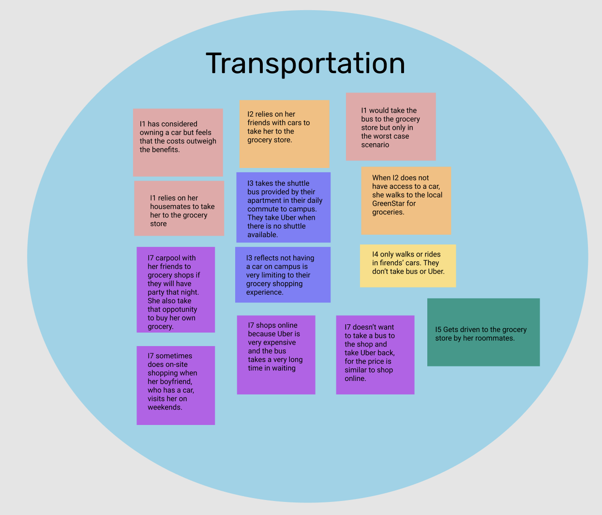
Step 3. Develop Persona
Lydia is currently a senior at Cornell University and this is her seventh semester of college. She is enrolled in 23
credits this semester. Her indecisive nature caused her to not declare her major until the end of her sophomore year,
so her course load has to be very full for the remainder of her semesters in order to graduate on time. After much
debate over a major, she landed on psychology. This mostly stemmed from her dislike of math; she chose the major as
far from anything math related that she could find. This dislike of math has expanded in her life past just her choice
of major. It also plays a role in her finances. While she tries to be careful with her spending, she doesn’t keep any
sort of budget or record of what she has spent or how much she will spend going forward. She knows this may seem
reckless or careless, but it has worked out for her so far. Lydia grew up in Southern California, a place that is warm
and sunny. The first few winters after moving to Ithaca were a real shock to the system, and the snow was very
unusual. While she can drive around no problem at home, the snowy hills in Ithaca are too intimidating to drive around
on. As such, Lydia doesn’t have a car of her own in Ithaca, and has no interest in getting one.
One of Lydia’s main sources of happiness is through connection and friendships with her peers and those around her.
She cares a lot about building strong bonds with the people around her and making these bonds ones that will last. She
really enjoys spending time with her friends and socializing over meals. On the weekends, this often means eating take
out or at a restaurant. However, always eating out isn’t an entirely sustainable lifestyle, especially because Lydia
cares a lot about maintaining good health. So, while she often eats out on the weekends, Lydia also enjoys eating
healthy, home cooked meals filled with lots of good nutrition. Sometimes she cooks these meals just for herself, other
times she’ll cook with her friends. She has found that this balance of eating out versus cooking has helped her to
maintain being healthy over the course of her life, and this is something she would like to continue.
Sometimes Lydia struggles with the balance between keeping up with work and good grades and spending time socializing
with her friends. She cares greatly about her grades and doing well in school. However, sometimes she has trouble
finding time to hang out with her friends and partake in social activities because she always finds herself doing
work. But this is a balance she is making strides to improve upon. One area that she tries to get back sometime that
is filled by her busy class schedule is by not spending too much time cooking on weeknights. Sometimes this means meal
prepping at the beginning of the week, while other times this means cooking quick and easy meals. Going to the gym on
a somewhat regular basis is another goal that Lydia has for her already busy schedule. She is able to get to the gym
on campus some days after her classes, but ideally she would be in the gym more regularly. While she is trying to
exercise in the gym, she doesn’t want to have to exert herself too much when she isn’t actively working out in the
gym. She doesn’t like her backpack to be too heavy while she is walking around campus, carrying heavy loads when she
goes shopping (specifically grocery shopping), etc..
Since Lydia doesn’t have her own car in Ithaca, she relies on her friends and roommates to drive her places. The main
destination that she has to make it to regularly is the grocery store. She really enjoys eating meals with her friends
when she has the chance. Either going out to dinner, getting takeout or making a meal with friends and roommates is
Lydia’s idea of a perfect social gathering. This is mostly only able to happen on the weekends though, because of
everyone’s busy schedule. Most recently, Lydia spent a few hours with one of her friends reproducing a famous BBQ lamb
recipe from Gorden Ramsay, which was enjoyed by friends. In addition to having dinner parties on the weekends, Lydia
sees it as a success when she meal preps on Sunday to make dinners for the coming weekdays. While she likes to be
prepared and do things like meal prep, one thing she doesn’t have control over is when she can get rides with her
roommates. This causes her some frustration because the only time that she is able to get a ride to the grocery store
is on Sunday mornings when the store is at its busiest. She gets stressed by all of the people hustling and bustling
around her. However, she still prefers this option to getting her groceries delivered. She has only tried that a few
times, but each time the groceries have been delayed, and she wasn’t able to get any adventurous or fun new foods.
Step 4. Develop Project Requirements
Functional Requirements:
- Social Interaction
- Time Management
- Shopping Recommendations
- Coordinate Grocery Shopping Trip
- Preferred Store
Contextual Requirements
- Physical Strength
- Mobile Application
- All Day Access
- Not Similar to Instacart
Step 5. Investigate the Solution Space
- Instacart
- Name: Instacart
- The problem this solution targets is lack of access / transportation to groceries and grocery stores.
- The problem solution is an app / website where you can choose a grocery store in your area and order your
groceries to be delivered to your home by an Instacart employee.
- One big limitation of this solution is cost. There is a delivery fee associated with Instacart that makes
getting groceries much more expensive, which is a big limitation for members of our target audience. Additionally,
there is no real social aspect associated with Instacart, it is solely a transaction.
- Anabeles
- Name: Anabeles
- The problem this solution targets is providing affordable and accessible groceries to college students at
Cornell.
- The problem solution is a small, Cornell student run, non-profit, grocery store located near the Cornell Law
School. They are seeking to provide affordable grocery store options for all Cornell students, regardless of year
or financial status. Anabels also offers a safe and secure environment, where students happen upon each other and
can socialize while grocery shopping. Because the store is available just to Cornell students, everyone that you
run into when you’re there is also a Cornell student
- One limitation of this solution is the limited options. The store is student run, and just located in a building
on campus. They only have a limited amount of options that they can feasibly provide at one time. Thus, students
will not be able to rely on this resource for all of their grocery shopping for a week.
- Hello Fresh
- Name: Hello Fresh
- The problem that this solution targets is helping inexperienced cooks make interesting and inspired dinners.
- The problem solution is that when you subscribe to a Hello Fresh recipe, they send you a package in the mail
every week with a few (however many you sign up for) meals for you to make that week. For each meal, you get a
recipe with instructions for how to prepare the meal, as well as all of the ingredients in the proportion that you
need for that recipe.
- One limitation of this solution is that it is rather expensive, so it isn’t necessarily a sustainable solution
for the target audience of our product. Additionally, while they send you food and recipes to make dinners for a
week, this doesn’t solve the problem of having food for the other two meals every day.
- Grocery Curb-Side Pickup
- Name: Grocery Curb-Side Pickup
- The problem that this solution targets is shoppers not wanting to have to spend time and energy in the crowded
grocery store.
- The problem solution is a function where grocery shoppers can go on the store website ahead of time, choose the
groceries that they would like to purchase and then just pick the groceries up outside of the store. While they
still have to make the trip to the store, the whole shopping process when using this method is much quicker.
- One limitation of this solution is that the people using this option still have to find transportation to the
grocery store, which is a real limitation for the users in our target group.
Step 6: Sketching
I created a number of sketches, as a means of brainstorming solutions to the problem that are best suited to help and
meet the needs of the persona.
-
Grocery Checklist App

Explanation: Users will have the checklist app, which they open when they run out of something in their fridge or
cabinet that they need more of. Then, at the end of the week, the items that are checked off in the checklist will
be automatically ordered for the user.
Persona’s Goals it Responds To: This responds to Lydia's desire to get new groceries, while not having access to
a car. Additionally, Lydia is very busy so having the checklist app automatically deliver what she needs will save
her a lot of time.
-
Grocery Social Media
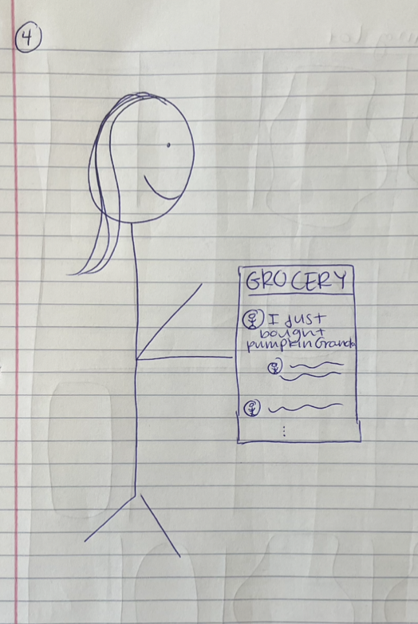
Explanation: An app where users can share what they are buying at the grocery store that functions like a social
media app. Users can post new things that they are buying, follow other users, and like and comment on their
purchases.
Persona’s Goals it Responds To: This responds to Lydia’s enjoyment of hearing what her friends are buying at the
store to get inspired with new ideas for ingredients, foods and recipes.
-
Electric Grocery Cart

Explanation: An electric grocery cart that people can ride to the grocery store. The cart has a pedestal on the
back that the person using it can stand on, and power the cart to get around.
Persona’s Goals it Responds To: This responds to Lydia’s need to get to the grocery store, without access to a
car. Additionally, the cart is very practical once she gets to the grocery store.
-
Dinner Party Planning App
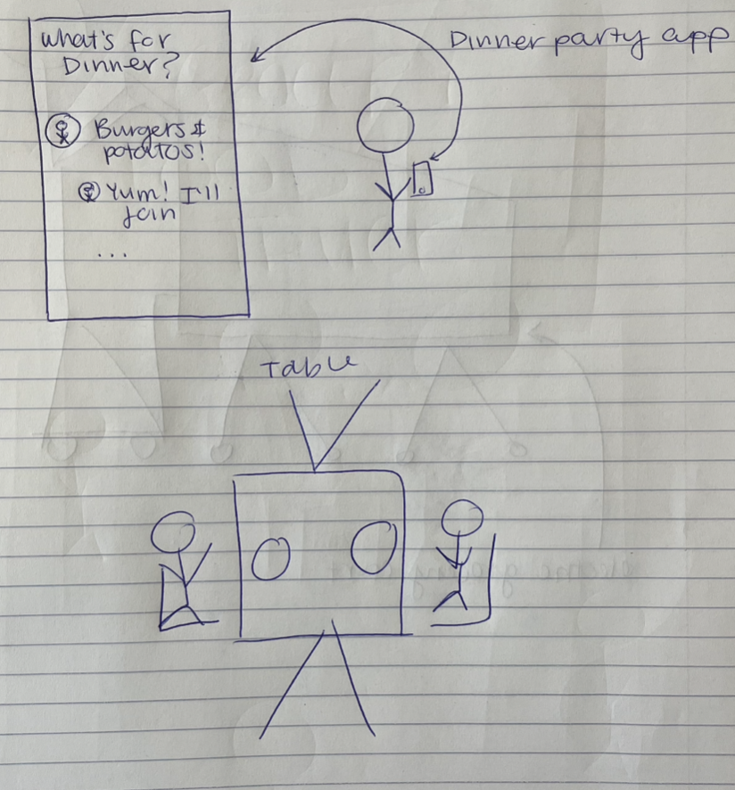
Explanation: Users can go on the app, find people who want to eat the same food for them for dinner that night,
and then they can plan a dinner party together. Someone in the party will have access to a car, so then the whole
group will go to the grocery store, get supplies and then make dinner.
Persona’s Goals it Responds To: This responds to Lydia's need to get to the grocery store. Additionally, she will
be able to meet new people on the app and then have dinner with them so this will also satisfy her desire for
socialization.
-
Grocery Food Truck

Explanation: Grocery stores will have their own food trucks that they can drive around town. While it is just a
food truck sized truck, they will have a myriad of different options, just in slightly smaller supply. People can
just walk up to the truck, order the groceries that they want, and then the truck can move to a new location if it
needs to get more business.
Persona’s Goals it Responds To: This responds to Lydia’s need for groceries, without a car to drive all the way
to the full grocery store. Additionally, the cost of upkeep for a food truck is relatively low, so the truck
wouldn’t have to up-charge the items, thus responding to Lydia's need for affordable groceries.
Step 7: Choosing a Design Idea
Final Idea
The final design idea is a super shopping cart connected to a mobile app that improves the overall grocery shopping
experience for the users, which is inspired and derived from some of our best designs. This solution incorporates
mainly 2 key components: transportation and connecting with others. This mode of transportation takes form as a small
golf-cart sized vehicle that sits one person and can connect with other shopping carts to assemble into a larger
train-like vehicle. Users will interact with the cart through the mobile app where they can schedule both individual
grocery trips, or trips with their friends. These trips consist of riding the shopping cart to the store, shopping in
store within the cart, and finally getting dropped off back home with the purchased grocery by the cart.
Step 8: Develop Tasks, Scenarios and Storyboards
Example Task
Connect with other friends who are out on a grocery run.
Example Scenario
It’s Friday morning. Lydia just woke up and is sitting in her bed, scrolling through various apps on her phone. Fall
is well underway and the weather outside has really started to take a turn for the cold. Even though this will be her
fourth winter in Ithaca, Lydia is still not used to and really doesn’t enjoy the cold. She has basically spent this
last week inside, curled up in the living room by herself, doing lots of school work. She’s very hungry this morning,
and while scrolling through Instagram, she is pondering what to eat for breakfast. Since she has been cooped up in the
house all week, she has been doing a lot of cooking, and she is just about out of leftovers. Just as she is thinking
she is going to order a bagel sandwich, she gets a notification.
The notification is from her Super Shopper App, telling her that her friend has just ordered a Super Shopper Cart,
and is headed down to Wegmans. This notification prompts Lydia to open the app, and she decides that she too will head
down to Wegmans. Now is the perfect time to replenish her groceries because she gets to shop with her friend and she
will save money by cooking breakfast rather than getting takeout. With the app open, Lydia orders a Super Shopper Cart
and sets her route to connect with her friend who is also going. Now that the cart is ordered and on its way, Lydia
quickly gets ready to go out into public and heads out to meet the cart that is driving up to her apartment.
The cart shows up outside her apartment and Lydia heads out to get in. The cart starts in the direction of Wegmans /
the meet up location with the friend she is headed to the store with. Once they reach the shared location, the carts
connect and they shuttle together down the rest of the way to Wegmans. Now, Lydia is able to do her grocery shopping
with her friend, getting all of the new food items she needs and even getting some new meal ideas based on what her
friend is picking out. Then, once they are done shopping, Lydia and her friend head on the Super Shopper Carts back
home where they eventually part ways and go to their own specific homes.
Example Storyboard

Step 9: Prototype
Diagram of Information Architecture
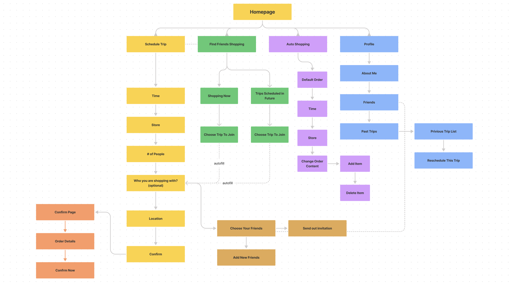
Develop a Paper Prototype
Paper Prototype User Test
Mid to High Fidelity Figma Prototype
Usability Testing